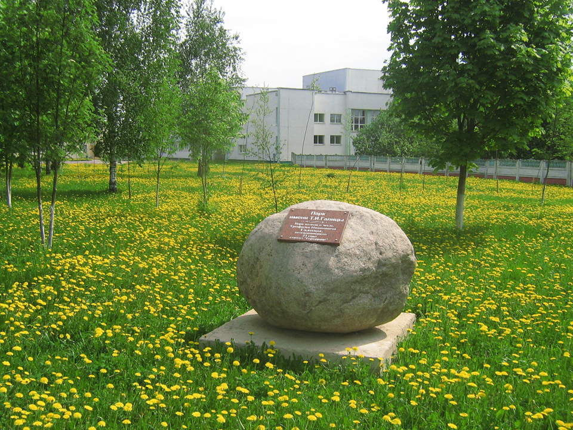
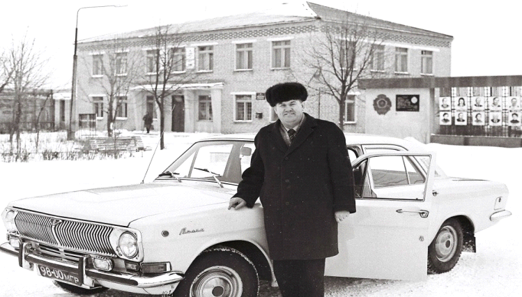
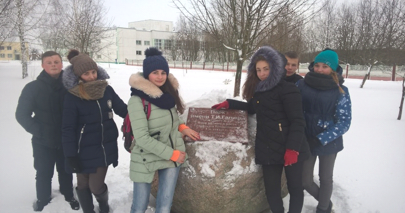

Парк Имени Т. И. Галицы

Галица Трофим Иванович родился 16 марта 1932 года в деревне Никольск Кледневичского сельского Совета Дрибинского района Могилёвской области в семье крестьян.

В 1939 году поступил в первый класс начальной Никольской школы. До войны окончил два класса.
В 1944 году пошёл учиться в третий класс Никольской школы, где окончил семь классов в 1949 году. После окончания семи классов поступил в восьмой класс Дрибинской средней школы, которую окончил в 1952 году. После окончания школы поступил в БСХА г. Горки на агрономический факультет. В 1957 году окончил академию и был направлен на работу в Витебскую область Стайковскую МТС агрономом по картофелеводству и проработал там до сентября 1957 года. После реорганизации МТС с сентября 1957 года по март 1959 года работал в качестве агронома в райсемхозе «1-ое Мая» Богушевского района Витебской области.
6 марта 1958 года вступил в брак с Юрьевой Неллой Романовной. В браке родилось четверо детей.
С марта 1959 года был направлен на работу в Могилёвскую область Шкловский район в совхоз «Городище» в качестве главного агронома.
С сентябре 1963 года по 1986 год Т.И. Галица возглавлял совхоз «Городище».
В первые годы своего существования совхоз становится прибыльным, но чрезмерно большая территория его усложняла дела по осуществлению руководством совхоза, а отсутствие хороших дорог мешало хозяйственным связям между бригадами.
В 1964 году с совхоза «Городище» выделили территорию Ордатского сельсовета, где создали совхоз «Рабочий».
Прошло десять лет после создания совхоза. Рабочие готовили достойную встречу 50-летия Великого Октября. До этого времени хозяйство стало одним из передовых не только в районе, но и в области.

За достигнутые успехи Указом Президиума Верховного Совета БССР от 14 декабря 1972 года хозяйству было переименовано в совхоз «Городище» имени 50-летия СССР.
В 1977 году совхоз был занесен на Всесоюзную Доску почета на ВДНХ СССР. Директор совхоза Т.И. Галица награждён двумя орденами Ленина (1978, 1980) и орденом Трудового Красного Знамени.
В 1986 году Галица Т.И. был переведен на работу в Шкловскую льносемстанцию.
Умер Галица Т.И. 23 ноября 1999 года. Похоронен в д.Городище.